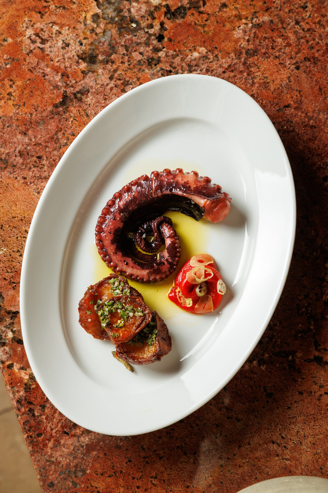
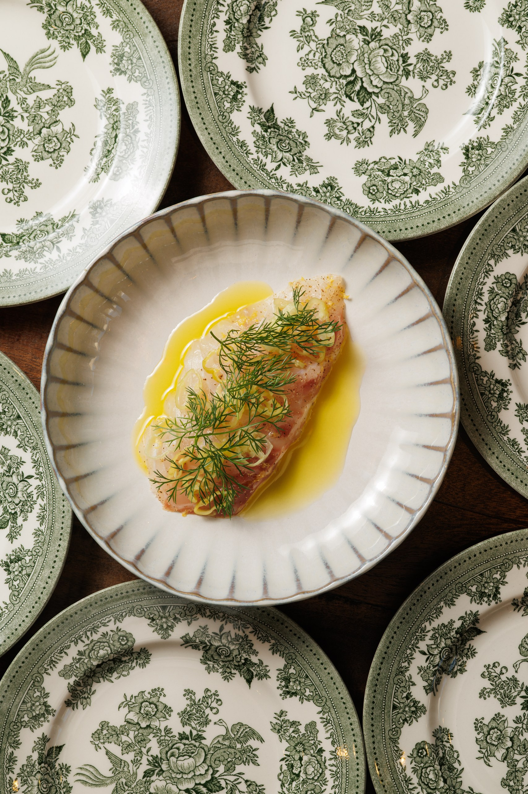
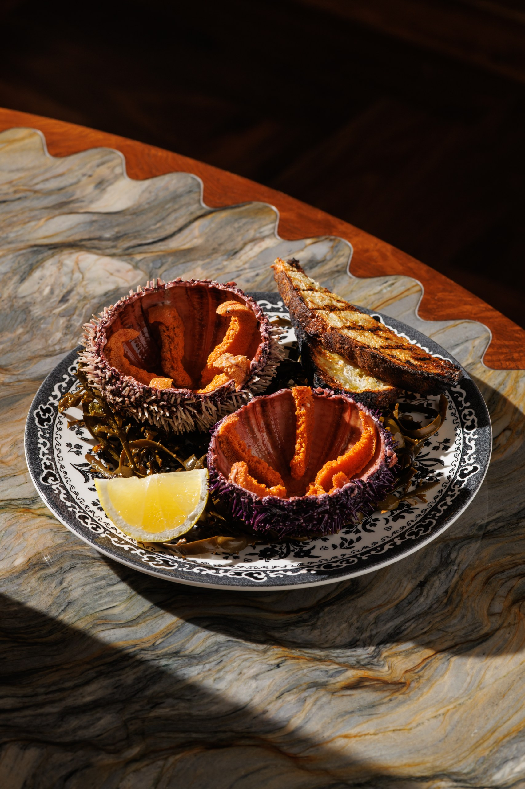
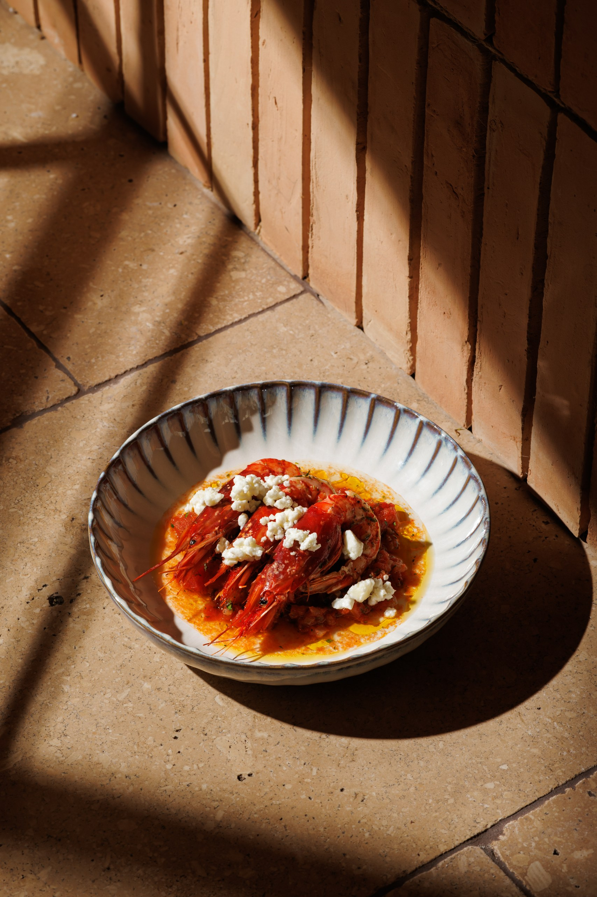
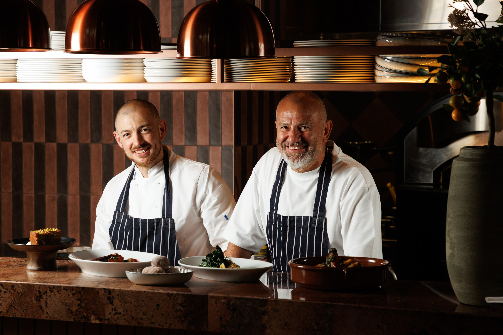

A Mediterranean menu of precise, confident cooking — grilled fish, seasonal vegetables, and things you'll want to come back for.

Produce-led Mediterranean cooking — grilled fish, slow-roasted meats, and seasonal vegetables from day-boat suppliers and trusted farms.
A menu built for sharing, a wine list that reaches from Greece to Burgundy, and a dining room designed to slow down in. Open for lunch and dinner, Tuesday to Sunday.
Our story →The menu changes with the seasons — driven by what's landing at the coast, what's best at the market, and what the fire is doing that week.
A mix of small plates to share, whole fish from the grill, slow-roasted meats, and vegetables treated with the same care as anything else on the pass. Here's a small glimpse.
Swipe for more →

Thinly sliced, with toursi chilli and the first press of our olive oil.

Opened to order, dressed with olive oil and lemon. Nothing else needed.

Sweet Sicilian prawns baked with tomato and crumbled feta.

Slow-roasted to glass-like crackling, finished with a spiced herb relish.

Executive chef Glen Ballis leads the kitchen at Clio, working alongside head chef Louis Korovias — formerly of Locanda Locatelli and Pied à Terre.
Together they've built a menu defined by precision, consistency, and a confident approach to simplicity — with an emphasis on high-quality ingredients and letting each element speak for itself.
Meet the team →On Chiltern Street in the heart of W1 — a short walk from Baker Street, Marylebone High Street, and Regent's Park.
66 Chiltern Street
London W1U 4EJ
Tuesday – Saturday
Lunch · Dinner
Bookings via OpenTable
Walk-ins at the bar
For groups of 10 or more
Enquire →